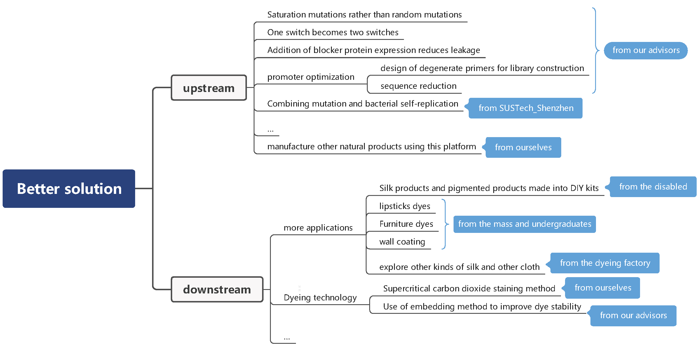

1 What kind of dyes shall we choose?
Terpenoids are natural compounds with physiological activity,such as antibacterial properties and healthy functions. We also found that some of the terpenes are also natural pigments that are expected to be used as coloring agents. So, based on the existing foundation in our laboratory, we chose red lycopene and lightly scented patchoulol to develop a dye that can inhibit bacteria. However, no information is available for either of them for dyeing silk, so we need to learn more about traditional silk dyes and dyeing techniques.2 How can we produce our ideal silk in an environmental-friendly way?
The production of terpenes by synthetic biology method is in line with our concept of environmental protection. The simultaneous production of two terpenes not only saves energy, but also reduces the discharge of wastewater in the dye extraction industry. Ingeniously, the red lycopene can also be used experimentally as a visual screening method for directed evolution. After checking the literature, we learned about the pollution hazards of the dyeing industry. So we planned to come to the Saixinglong dyeing factory to learn more about the pollution problems of the traditional textile industry.3 What will happen in application scenarios?
In terms of daily use, we want to get public acceptance of the production methods and products by presenting our projects.Different stakeholders
Professional dyers
A research study visit to Saixinglong Company
Consumers
Project significance and social acceptance survey
Among all the stakeholders, the general users are the largest. We conducted an initial social acceptance survey for the general public. We included an informed consent form at the beginning of the questionnaire to protect the privacy of the respondents. Only after the respondents clicked on the consent form could they complete the questions related to the project's significance mining, knowledge of dyeing industry pollution, and acceptance of synthetic biology methods. Finally, we obtained 304 valid questionnaires.Conclusion of the survey results
a)mining project significance
1. the results of the questions "knowledge of dyeing pollution" show that the public has a certain level of knowledge about the pollution in the dyeing industry, so it is feasible to carry out and promote this project.
2. considering the results of questions such as "recommend to friends, microorganisms mind, ideal price", it can be concluded that our project has a high level of social acceptance in all age groups.
3. looking into other applications of the project product: when we brainstormed, we also hoped to apply this dye to other scenarios, and the public's answers were related to: wall coating, furniture coating, transportation coating, cosmetics, and daily necessities. Their answers not only affirmed the environmental significance of our project, but also made us more confident: in the future, these industries are oriented towards environmental protection and multi-functional development.
b)future education content to focus on
1. the dyeing industry pollution, synthetic biology production methods are generally less understood.
2. the acceptance of biological production is lower than that of plant extracts. So, the need for scientific knowledge of the process of biological production.
Based on the results of the social acceptance survey, we have confirmed the feasibility of the project, identified new problems that the project is expected to solve, and hope to get proof of concept in the subsequent experiments, and the results of the survey on the understanding of dyeing industrial pollution and the acceptance of synthetic biology methods also suggest the focus of the content for the subsequent public education.
In the process of designing our project, we encountered various problems, and in the process of communicating with our PIs, instructor and advisors, we found the way to solve them.
Professor Yin Lin is our primary PI who majors in enzymology and fermentation engineering. At the beginning of our project design, it was professor Lin who inspired us to refer to dyes in the dyeing of silk. She also provided us with broader ideas, such as applying pigments to scenes such as wall paint and hair dye. So far, SCUT-China have set up several offline or online meetings with Prof. Lin, during which we made presentation on our ideas and progress, meanwhile exchanging opinion with each other. Besides, the experiment and part of the modelling are guided by the students from her laboratory. Understanding that we were having problems with directed evolution, Prof. Lin also further supported us the meeting with Biocreatech, a local company studying the directed evolution of enzymes.


Professor Jianwen Ye is our secondary PI who majors in cell manufacture. So far, we have set up several offline meetings with Prof. Ye. According to his advice, we proposed and processed the idea of light-induced system, which fully improved the gene circuit, regulated the manufacturing, and further completed our project. At the same time, Prof. Ye gave very important guidance on our team's modeling work, and based on his advice, we clarified the direction of our modeling work going forward. Besides, the experiment and project design are also guided by PhDs from Ye's lab.
Guangjuan Luo is our instructor from Prof. Lin's lab. She provides full guidance for the designing of the gene circuit, the product implementation, and the planning of project schedule. The experiment is majorly instructed by her, and we also learn a lot about the safety rule in our laboratory. Through the discuss with Luo, we developed a visualization method combining with plate screening.


Xinying Zhang is one of our advisors who majors in the manufacturing of lycopene. She constantly provides guidance for the experimental operation. Besides, we also discuss on the implementation of FUNCDYES. As is emphasized by Zhang, a strain for lycopene should be adapted since the co-expression may lead to the decrease of both products. Zhang provided us with 2OZPP, the more-high-yield strain, and we eventually obtained a positive result.
Yue Huang is one of our advisors who majors in the manufacturing of antimicrobial peptides. Knowing that we hope to verify the antisepsis effect of patchoulol as a dye through experiments, he introduced several experimental schemes for the antibacterial properties of common products. As a hydrophobic molecule, the experimental protocol used in liquid culture is not applicable. Therefore, we eventually intend to use a solid plate to carry out MIC experiments. In the investigation process of relevant literature, we found that some researchers had conducted similar experiments and obtained good experimental results, which confirmed the antibacterial performance of patchoulol, so we did not repeat the experiment. His guidance on inhibition experiments helped us to quickly determine the inhibition properties of patchoulol.

Apart from above, we have made contacted with many other advisors including the professors, workers, and graduate students who major in various fields. For the implementation of FUNCDYES, we have received many suggestions concerning the function of our co-expression system, the physicochemical property of lycopene and patchoulol, the technological process and even the application scenario. One of the advisors, Professor Yanrui Ye, suggested us to popularize this system to the dye of lipstick. Moreover, various pigments and colors can also be synthesized with the regulation of our co-expression system. Some of the advice provide a future prospect for our project and we have gathered them in our website.
Connecting and sharing
We carry out our human practice in one of the purpose of shaping our project with social economic factors in reality. Thus we grasp every opportunity to share our idea of synthetic biology in sustainable production to the public. We advertise the principles and applications of our project to professors and undergraduates majoring various research areas in our campus, and residents in all walks of life nearby in the neighborhood. We also visit institutions, companies and factories covering the whole production process of a dyed silk, from spinning and weaving, the design and production of dyes and enzymes, dyeing and sewage disposal, etc. Besides, to seek inspiration and innovative solution to similar problems, we keep in touch with many other iGEM teams to exchange ideas and share progress. Also in CCiC forum we attain many feedbacks from our peers to better modified our project.
Presenting our project
Taking in consideration of the understanding of life science, we present our project in different ways. For researchers, we demonstrate our design and work in detail for a professional feedback in strategies and experiments. For the general public, we prefer to present our promotion video and poster that is easier to grasp the idea and focus on more about the applications in daily life. For example, we bring out the topic by introducing the damage of textiles, and further expand our potential applications in clothes and cosmetics. This help the audience to understand our project and give feedbacks accordingly.
Attaining stakeholders' feedback
When doing social economic research, the stakeholders' interest and opinion is definitely important, which we learnt a lot from our communication. From our visit to BiocreAtech, our visualization method is considered innovative and efficient, and we also learnt that if we are going to put our project to an industrial scale, the productivity and quality must be under consideration. In our practice in Tianhe work therapy station, we are inspired that maybe our special dyes can be used to make a DIY handcraft kit, or even be used in troves. Besides, several professors raise the same potential application in cosmetics, lipsticks. Our dyes can provide the lipsticks with bright colors and elegant fragrance from green resource, increasing their competitiveness in sustainable development. All feedbacks above went through our careful discussion, and greatly free our mind in designing and improving our project.
Carrying it forward
In today's society, all kinds of social media have become the main tools for people to contact and communicate. Therefore, we took an active part in various social media. We publish through promotion video, WeChat public account, bilibili and other social accounts. Promotion videos, showcasing our projects and campaigns, collecting advice for different groups of people in society.
We also have advocated our project to different types of people in different way not only on the purpose of collecting feedbacks to better modify our project, but also spread synthetic biology methods. We also designed cartoon plastique creations as a token of appreciation for the community who gave us feedback.


Better solutions
The application of natural dyes in the environmental protection industry is of great significance, so we have put forward more proposals after collecting public suggestions, such as furniture dyes, food coloring, lipstick, etc. In the future, we will contact relevant manufacturers to discuss the possibility of project cooperation. We also plan to extend the blue-light induced dynamic regulation system based on Pichia pastoris in our project as a platform to the production of more products, especially some other natural pigments, natural dyes, our platform can greatly reduce the production consumption and pollution.
Closing the loop
We put forward energy consumption, pollution, silk corruption and other issues among the possible problems of the project. We have solved them one by one thanks to the integrated human practice. We will carry out the presentation further and form a closed loop to gradually promote the project optimization.
Thanks to Toulouse INSA-UPS, we can reference their ethical matrix to implement our project.
As a descriptive ethical matrix, its purpose is to highlight the elements that have influenced the decision-making process carried out by the team. Our aim is to build a project that respects and preserves the stakeholders. We also wanted a project that was as responsible and good for the world as possible. During the design of our system, three conditions were put forward based on the crossroads between stakeholders and values (well-being, autonomy, fairness):
• Material conditions: considering resources, to compensate for their unequal
distribution
• Moral conditions: responsibility in design, responsibility of intermediary actors
•
Cultural conditions: acceptability by users.
As a normative ethical matrix towards the team members, it is a way to constrain our social responsibility in
this project.
Presentation of the stakeholders in the development of our technologies for FUNCDYES:
Actors: any person or group of people who can decide about the right way to act and who can have an
impact on that decision.
→ iGEM team, laboratory working on projects similar to ours
Users:
people who use a technology and who may have certain wishes or requirements for the operation of a
technology.
→ People who are interested in silk collection and Chinese culture
Regulators:
rule-making organizations or regulations that technical products must comply with. These may include
standards related to health and safety, but also guidelines related to competitor relations and fair trade.
→
Governments or organizations that produce environmentally friendly natural dyes
| Stakeholders | Autonomy | Well-being | Fairness |
| The autonomy principle stipulates the need to respect the autonomy of an independent person who is considered to be free and capable. | The principle of beneficence, which requires contributing to the well-being of others; Well-being is a state related to various factors considered separately or jointly: health, social or economic success, pleasure, self-actualization, harmony with oneself and with others. | The justice principle is concerned with the distribution of resources. | |
| iGEM Team | We detail the components and operations of our project on the wiki for reference by other iGEM teams or any other research team. | Our entire design is carried out in compliance with laboratory safety laws and regulations. | All information about our project is freely available, accessible to all and well documented. |
| Patchouli alcohol or Lycopene Production Company | These institutions have the right to supervise the design and implementation of the project. | In the project, we will continue to research ways to increase yield and continuously optimize our combined expression system. Further testing for the low-toxicity and safety of the fermentation is also planned, with continuous optimization. | The production must comply with relevant regulations, which involve non-toxicity testing of strains, equipment safety testing, and some production principles. |
| Governments or organizations that produce environmentally friendly natural dyes | These institutions have the right to supervise the design and implementation of the project. | The problem of environmental pollution is a problem that all countries in the world should pay attention to. Our project introduces a blue light control system to reduce the use of methanol when producing environmentally friendly natural dyes, and also tries to avoid the use and waste of toxic reagents in the production process. | The production of environmentally friendly natural dyes must comply with relevant regulations, which involve non-toxicity testing of strains, equipment safety testing, and some production principles. |
| Dye industry company | These institutions have the right to supervise the design and implementation of the project. | In the project, we will further test the performance of lycopene and patchouli alcohol in dyeing, and continuously optimize the dyeing scheme and the ratio of dye components to obtain the best dyeing effect. | Related products need to comply with regulations in the industry, and product quality needs to be guaranteed. |
| Consumers of environment-friendly dyes products | We will launch small-scale toolbox-type production equipment in the future for users who need it to produce and use by themselves. We will try to reduce the consumption of resources and the difficulty of operation of small production equipment to make it more feasible. | We will further test the safety, non-toxicity, and environmental friendliness of the equipment, and try our best to consider emergencies in the production process and propose solutions to ensure the interests of consumersWe will further test the safety, non-toxicity, and environmental friendliness of the equipment, and try our best to consider emergencies in the production process and propose solutions to ensure the interests of consumers. | Consumers can contact the merchant for repair or replacement when the product has quality or safety problems within the specified time. |